library(gtsummary)
library(corrr)Causal Inference - Intro
Using data & diagram from r-causal: chapter 2
net_data <- read_rds(here("data/causal/net_data.Rds"))Explore
Exposure: net
Outcome: malaria_risk
names(net_data) [1] "id" "net" "net_num"
[4] "malaria_risk" "income" "health"
[7] "household" "eligible" "temperature"
[10] "insecticide_resistance"skimr::skim(net_data)| Name | net_data |
| Number of rows | 1752 |
| Number of columns | 10 |
| _______________________ | |
| Column type frequency: | |
| logical | 2 |
| numeric | 8 |
| ________________________ | |
| Group variables | None |
Variable type: logical
| skim_variable | n_missing | complete_rate | mean | count |
|---|---|---|---|---|
| net | 0 | 1 | 0.26 | FAL: 1298, TRU: 454 |
| eligible | 0 | 1 | 0.02 | FAL: 1716, TRU: 36 |
Variable type: numeric
| skim_variable | n_missing | complete_rate | mean | sd | p0 | p25 | p50 | p75 | p100 | hist |
|---|---|---|---|---|---|---|---|---|---|---|
| id | 0 | 1 | 876.50 | 505.90 | 1.0 | 438.75 | 876.5 | 1314.25 | 1752.0 | ▇▇▇▇▇ |
| net_num | 0 | 1 | 0.26 | 0.44 | 0.0 | 0.00 | 0.0 | 1.00 | 1.0 | ▇▁▁▁▃ |
| malaria_risk | 0 | 1 | 39.67 | 15.37 | 10.0 | 28.00 | 36.0 | 50.00 | 90.0 | ▃▇▅▂▁ |
| income | 0 | 1 | 897.76 | 191.24 | 330.0 | 764.75 | 893.0 | 1031.00 | 1484.0 | ▁▅▇▅▁ |
| health | 0 | 1 | 50.21 | 19.35 | 5.0 | 37.00 | 50.0 | 64.00 | 100.0 | ▂▆▇▅▁ |
| household | 0 | 1 | 2.97 | 1.41 | 1.0 | 2.00 | 3.0 | 4.00 | 9.0 | ▇▇▂▁▁ |
| temperature | 0 | 1 | 23.93 | 4.10 | 15.6 | 20.90 | 23.8 | 27.10 | 32.2 | ▃▇▇▇▃ |
| insecticide_resistance | 0 | 1 | 50.08 | 14.44 | 5.0 | 40.00 | 50.0 | 60.00 | 95.0 | ▁▅▇▃▁ |
net_data_dep_vars <- net_data |>
select(!c(malaria_risk, id, net_num)) |> names()True Relationship

Correlation
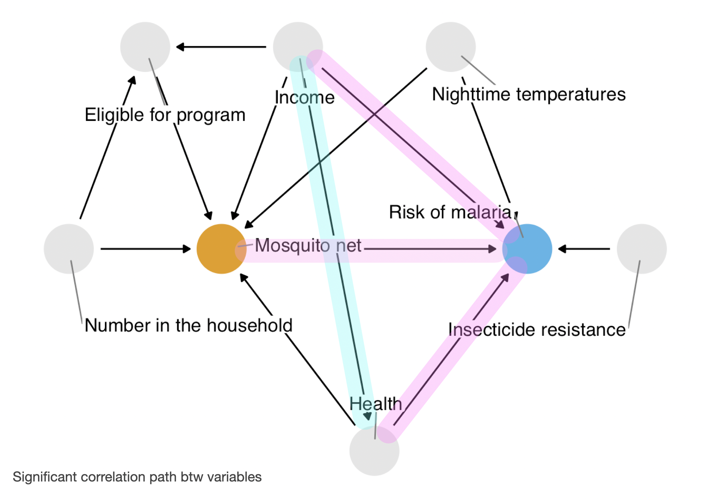
net_data_cor <- net_data |>
corrr::correlate(quiet = T) corrr::rplot(shave(net_data_cor), print_cor = TRUE)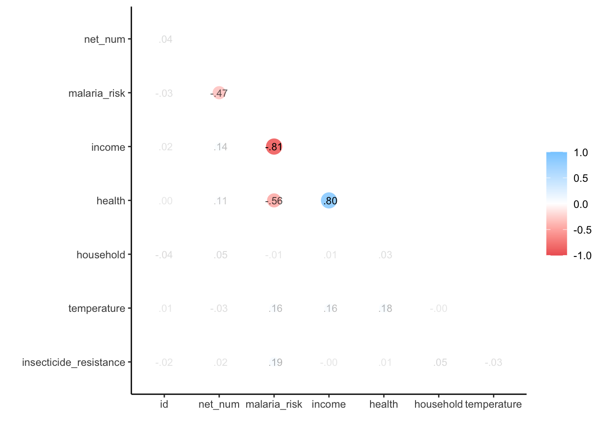
network_plot(net_data_cor)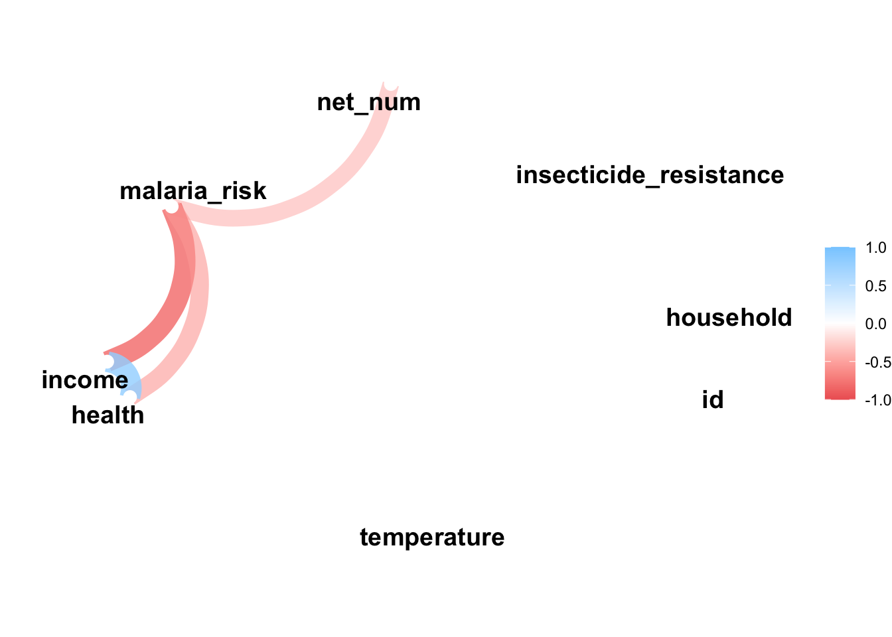
Outcome: malaria_risk (LM)
Univar LM
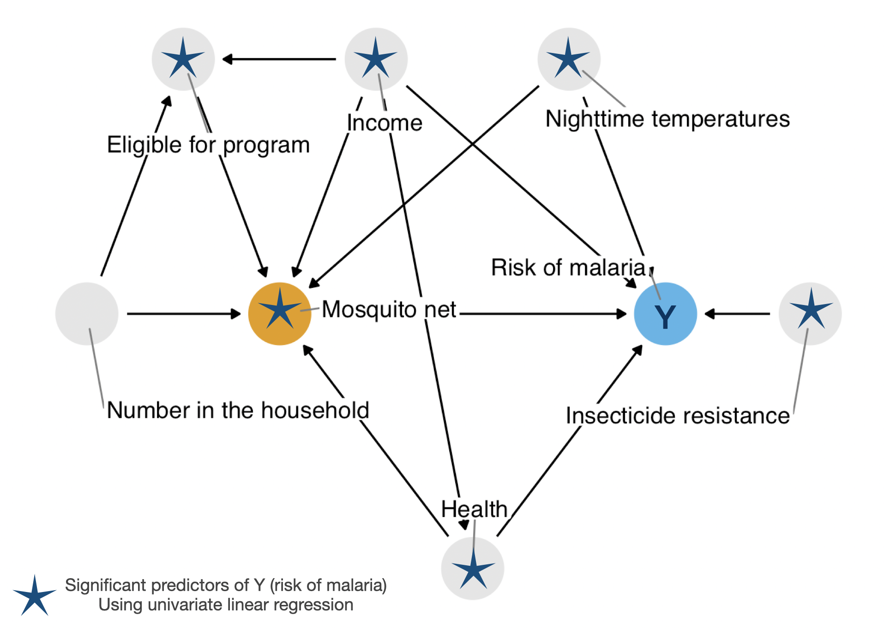
malaria_riskCode
net_data_tbl.malaria.uv <- net_data |>
select(all_of(net_data_dep_vars), malaria_risk) |>
tbl_uvregression(
method = lm,
y = malaria_risk,
pvalue_fun = ~ style_pvalue(.x, digits = 3)
) |>
bold_p() |>
bold_labels()
net_data_tbl.malaria.uv| Characteristic | N | Beta | 95% CI1 | p-value |
|---|---|---|---|---|
| net | 1,752 | |||
| FALSE | — | — | ||
| TRUE | -16 | -18, -15 | <0.001 | |
| income | 1,752 | -0.06 | -0.07, -0.06 | <0.001 |
| health | 1,752 | -0.45 | -0.48, -0.41 | <0.001 |
| household | 1,752 | -0.09 | -0.60, 0.43 | 0.740 |
| eligible | 1,752 | |||
| FALSE | — | — | ||
| TRUE | 20 | 15, 25 | <0.001 | |
| temperature | 1,752 | 0.62 | 0.45, 0.79 | <0.001 |
| insecticide_resistance | 1,752 | 0.21 | 0.16, 0.25 | <0.001 |
| 1 CI = Confidence Interval | ||||
Multivar LM
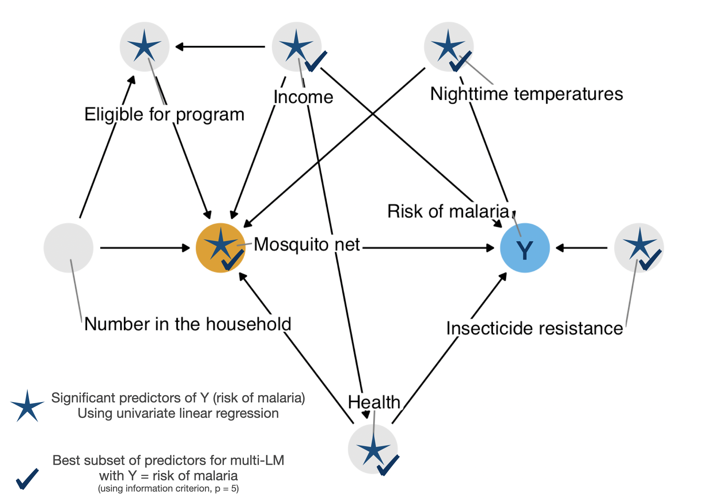
malaria_riskUsing best subset with leaps
library(leaps)
source(here("R/leaps-extra.R"))net_data_mod <- net_data |> select(all_of(net_data_dep_vars), malaria_risk)net_data_malaria_rss.fit <- leaps::regsubsets(
malaria_risk ~ .,
data = net_data_mod,
force.in = 1 # Force to include `net` as predictors
)
# broom::tidy(net_data_malaria_rss.fit) Code
library(patchwork)
library(latex2exp)
p_cp <- autoplot(net_data_malaria_rss.fit, res = "mallows_cp") +
labs(y = TeX("$C_p$"))
p_bic <- autoplot(net_data_malaria_rss.fit, res = "BIC")
p_adj_rsq <- autoplot(net_data_malaria_rss.fit, res = "adj.r.squared") +
labs(y = TeX("Adjusted $R^2$"))
p_cp + p_bic + p_adj_rsq +
plot_annotation(title = "Best Subset Selection at Each Model Sizes",
subtitle = TeX("Estimate test error by $C_p$, BIC, and Adjusted $R^2$"))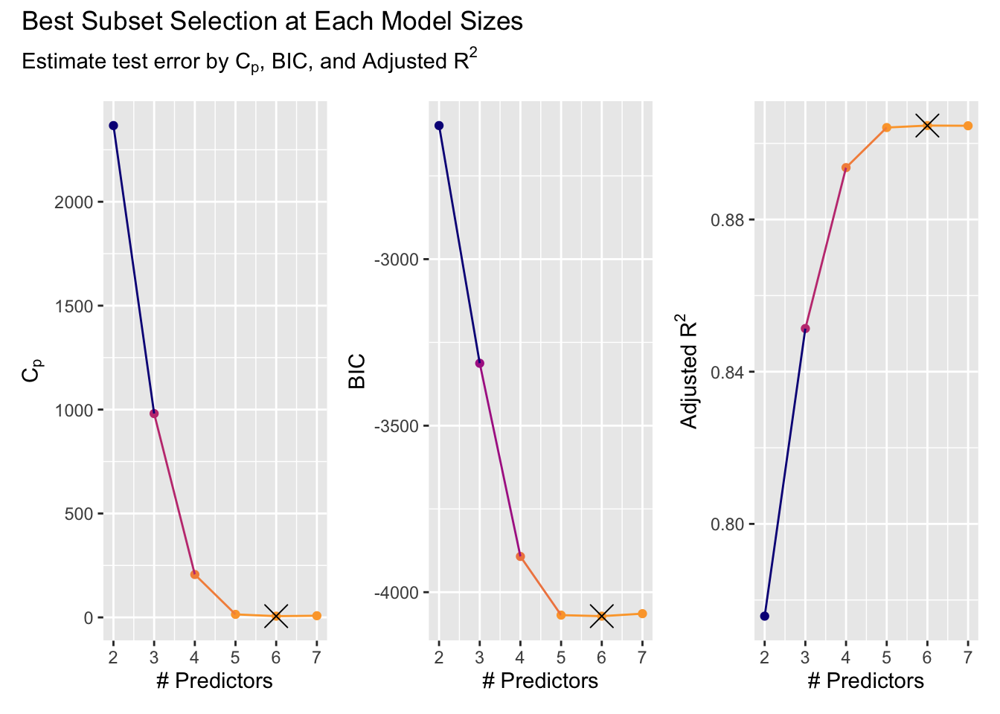
plot(net_data_malaria_rss.fit, scale = "bic")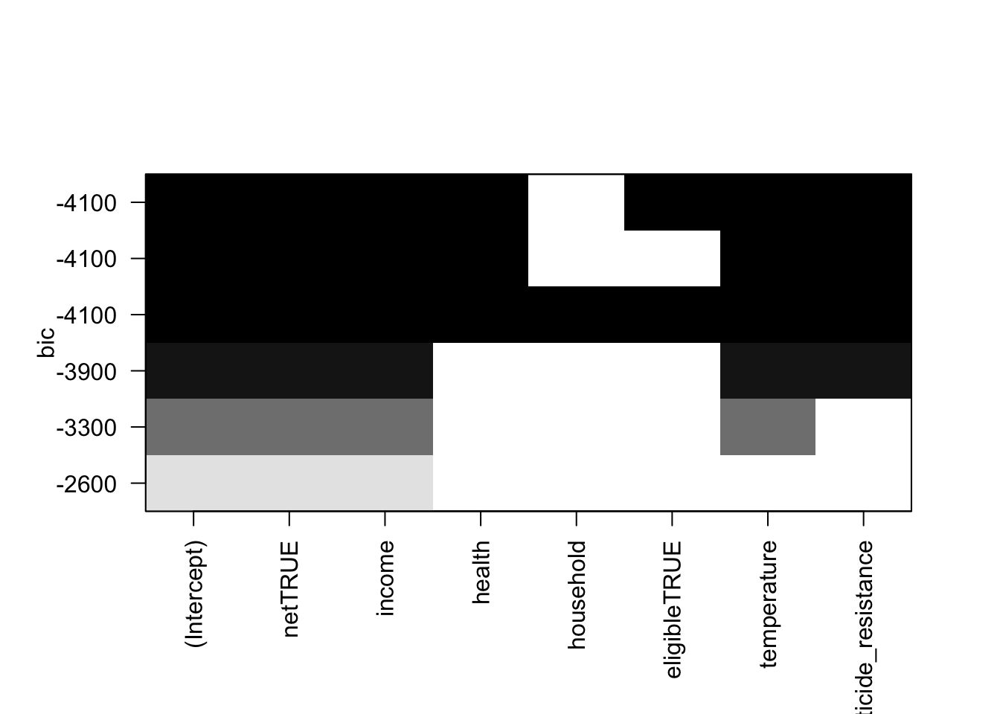
Fit Best Multi LM
net_data_malaria_lm.fit <- lm(
malaria_risk ~ net + income + health + temperature + insecticide_resistance,
data = net_data_mod
)Code
net_data_tbl.malaria.mv <- net_data_malaria_lm.fit |>
tbl_regression(
pvalue_fun = ~ style_pvalue(.x, digits = 3)
) |>
bold_p() |>
bold_labels()
net_data_tbl.malaria.mv| Characteristic | Beta | 95% CI1 | p-value |
|---|---|---|---|
| net | |||
| FALSE | — | — | |
| TRUE | -12 | -13, -12 | <0.001 |
| income | -0.08 | -0.08, -0.07 | <0.001 |
| health | 0.14 | 0.12, 0.15 | <0.001 |
| temperature | 1.0 | 0.98, 1.1 | <0.001 |
| insecticide_resistance | 0.22 | 0.20, 0.23 | <0.001 |
| 1 CI = Confidence Interval | |||
Summary
Outcome = malaria_risk
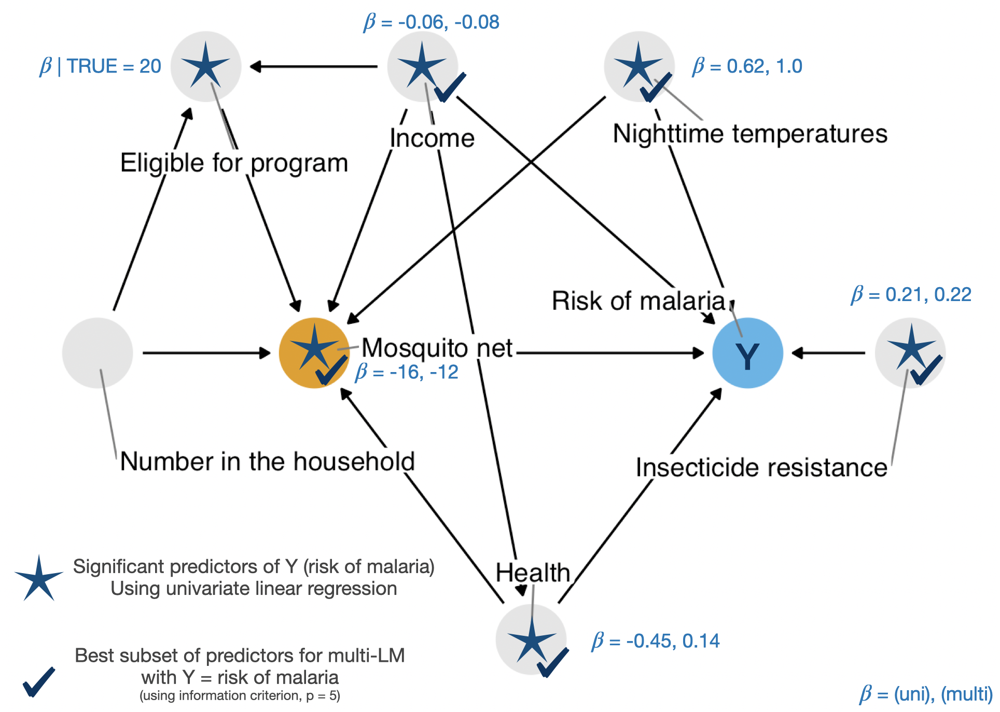
malaria_riskCode
net_data_tbl.malaria.uv.mv <- tbl_merge(
list(net_data_tbl.malaria.uv, net_data_tbl.malaria.mv),
tab_spanner = c("**Univar**", "**Multivar**")
)
net_data_tbl.malaria.uv.mv| Characteristic | Univar | Multivar | |||||
|---|---|---|---|---|---|---|---|
| N | Beta | 95% CI1 | p-value | Beta | 95% CI1 | p-value | |
| net | 1,752 | ||||||
| FALSE | — | — | — | — | |||
| TRUE | -16 | -18, -15 | <0.001 | -12 | -13, -12 | <0.001 | |
| income | 1,752 | -0.06 | -0.07, -0.06 | <0.001 | -0.08 | -0.08, -0.07 | <0.001 |
| health | 1,752 | -0.45 | -0.48, -0.41 | <0.001 | 0.14 | 0.12, 0.15 | <0.001 |
| household | 1,752 | -0.09 | -0.60, 0.43 | 0.740 | |||
| eligible | 1,752 | ||||||
| FALSE | — | — | |||||
| TRUE | 20 | 15, 25 | <0.001 | ||||
| temperature | 1,752 | 0.62 | 0.45, 0.79 | <0.001 | 1.0 | 0.98, 1.1 | <0.001 |
| insecticide_resistance | 1,752 | 0.21 | 0.16, 0.25 | <0.001 | 0.22 | 0.20, 0.23 | <0.001 |
| 1 CI = Confidence Interval | |||||||
Outcome: net (LR)
Univar LogReg
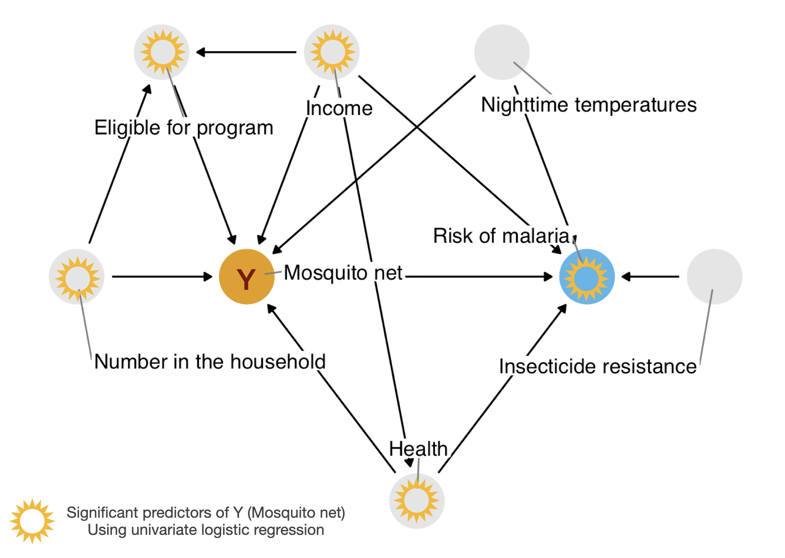
netCode
net_data |>
select(all_of(net_data_dep_vars), malaria_risk) |>
tbl_uvregression(
method = glm,
y = net,
method.args = list(family = binomial),
exponentiate = TRUE,
pvalue_fun = ~ style_pvalue(.x, digits = 3)
) |>
bold_p() |>
bold_labels()| Characteristic | N | OR1 | 95% CI1 | p-value |
|---|---|---|---|---|
| income | 1,752 | 1.00 | 1.00, 1.00 | <0.001 |
| health | 1,752 | 1.01 | 1.01, 1.02 | <0.001 |
| household | 1,752 | 1.09 | 1.01, 1.17 | 0.029 |
| eligible | 1,752 | |||
| FALSE | — | — | ||
| TRUE | 2.94 | 1.51, 5.73 | 0.001 | |
| temperature | 1,752 | 0.98 | 0.96, 1.01 | 0.163 |
| insecticide_resistance | 1,752 | 1.00 | 1.00, 1.01 | 0.360 |
| malaria_risk | 1,752 | 0.88 | 0.87, 0.90 | <0.001 |
| 1 OR = Odds Ratio, CI = Confidence Interval | ||||
Multivar Logreg
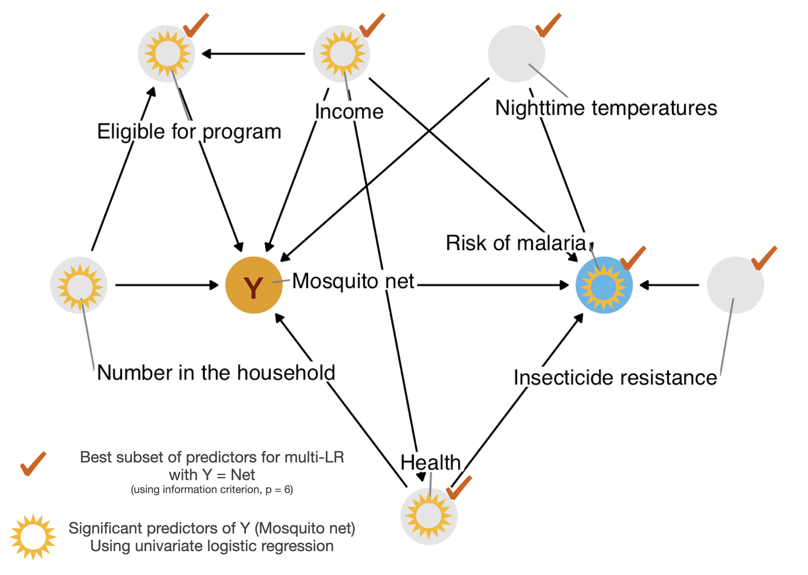
netlibrary(bestglm)net_data_Xy_net <- net_data_mod |>
relocate(net, .after = last_col()) |>
as.data.frame()net_data_net.bestglm <- bestglm::bestglm(net_data_Xy_net,
family = binomial(),
IC = "BIC")Morgan-Tatar search since family is non-gaussian.net_data_net.bestglm$BestModels income health household eligible temperature insecticide_resistance
1 TRUE TRUE FALSE TRUE TRUE TRUE
2 TRUE TRUE TRUE TRUE TRUE TRUE
3 TRUE FALSE FALSE TRUE TRUE TRUE
4 TRUE FALSE TRUE TRUE TRUE TRUE
5 TRUE TRUE FALSE FALSE TRUE TRUE
malaria_risk Criterion
1 TRUE 642.8398
2 TRUE 650.3082
3 TRUE 675.0623
4 TRUE 682.5247
5 TRUE 698.3880Summary
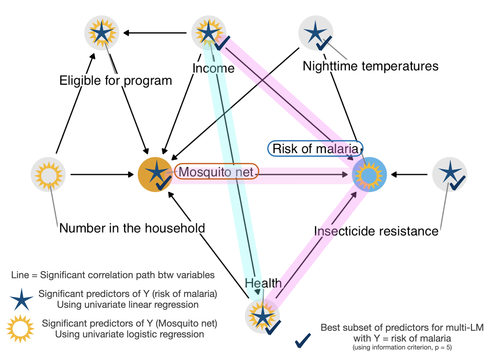
malaria_risk or netCode
net_data_tbl.malaria.uv.mv| Characteristic | Univar | Multivar | |||||
|---|---|---|---|---|---|---|---|
| N | Beta | 95% CI1 | p-value | Beta | 95% CI1 | p-value | |
| net | 1,752 | ||||||
| FALSE | — | — | — | — | |||
| TRUE | -16 | -18, -15 | <0.001 | -12 | -13, -12 | <0.001 | |
| income | 1,752 | -0.06 | -0.07, -0.06 | <0.001 | -0.08 | -0.08, -0.07 | <0.001 |
| health | 1,752 | -0.45 | -0.48, -0.41 | <0.001 | 0.14 | 0.12, 0.15 | <0.001 |
| household | 1,752 | -0.09 | -0.60, 0.43 | 0.740 | |||
| eligible | 1,752 | ||||||
| FALSE | — | — | |||||
| TRUE | 20 | 15, 25 | <0.001 | ||||
| temperature | 1,752 | 0.62 | 0.45, 0.79 | <0.001 | 1.0 | 0.98, 1.1 | <0.001 |
| insecticide_resistance | 1,752 | 0.21 | 0.16, 0.25 | <0.001 | 0.22 | 0.20, 0.23 | <0.001 |
| 1 CI = Confidence Interval | |||||||